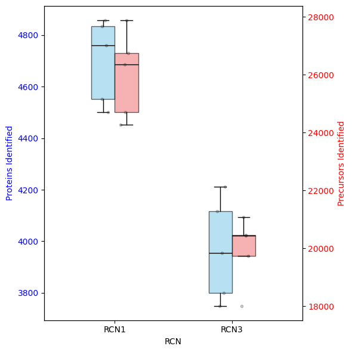
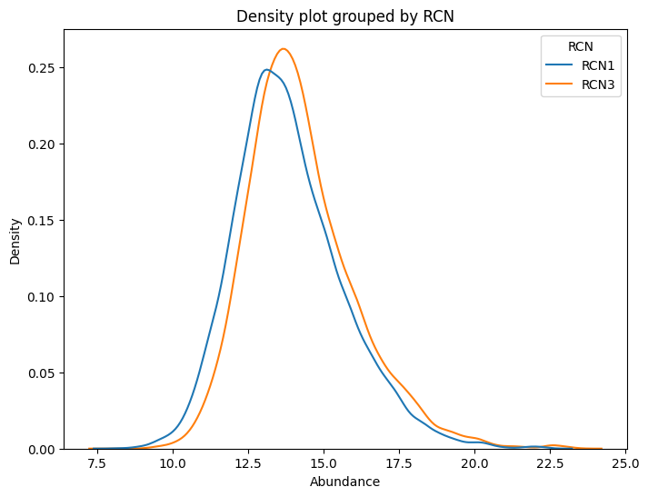
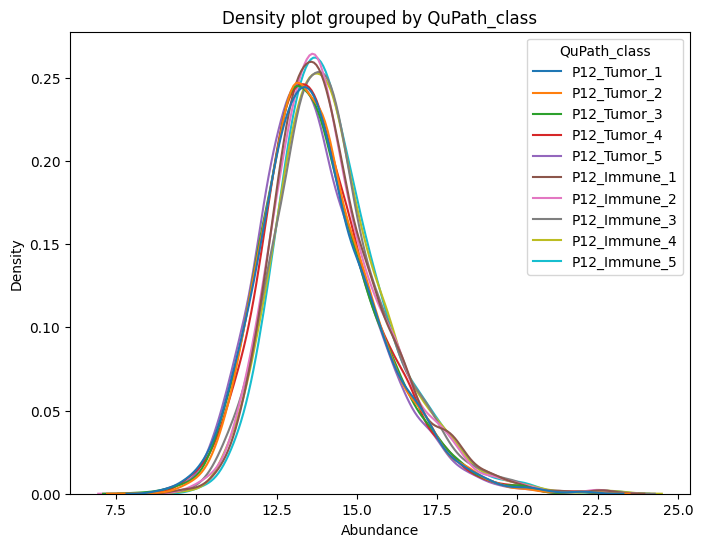
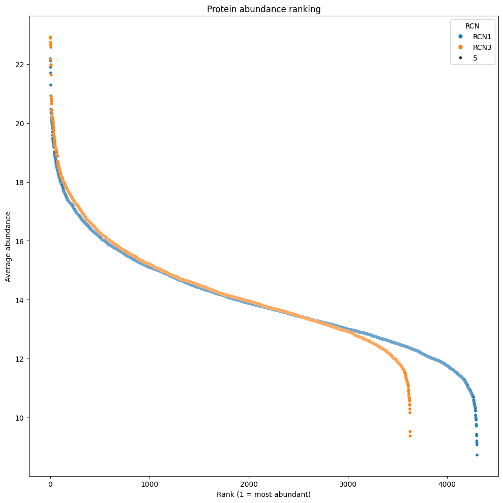
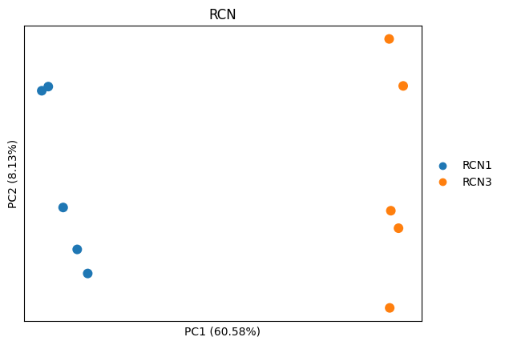
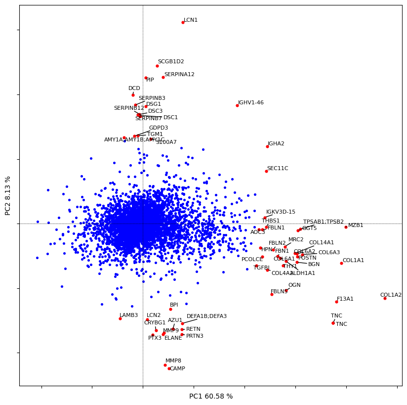
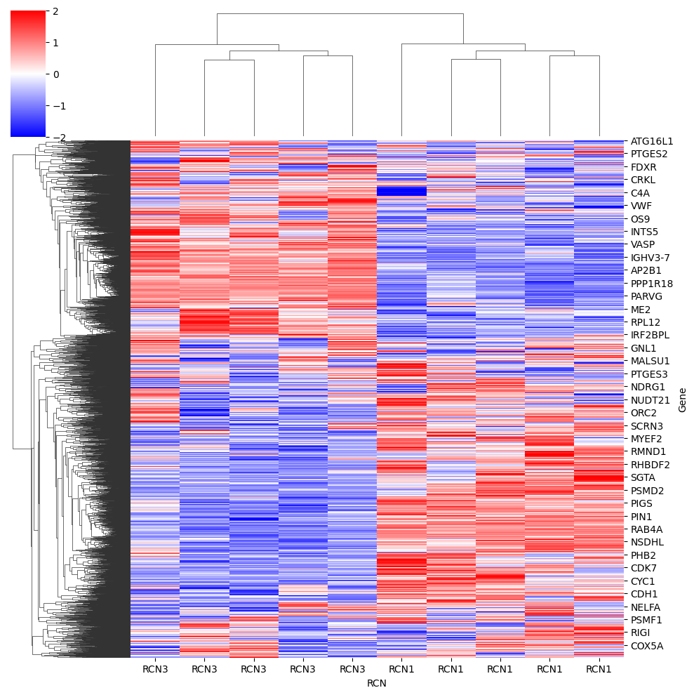
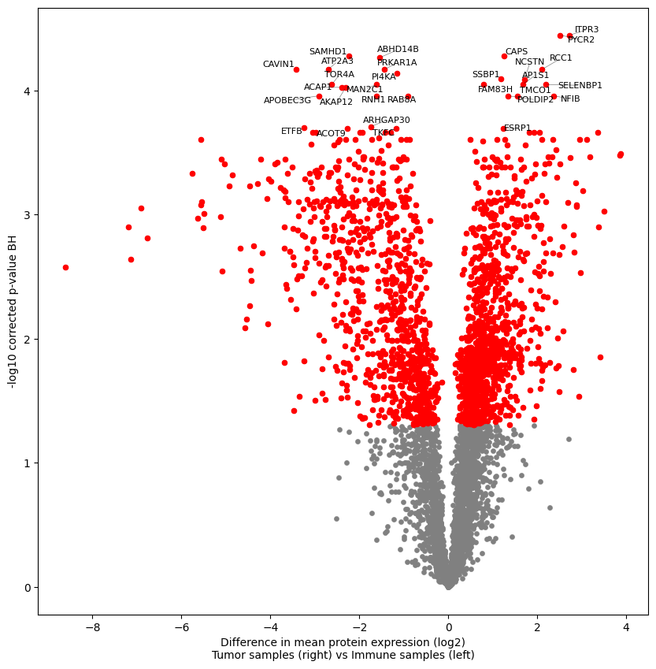

Downstream proteomics#
Analyzing downstream proteomics is fun!
In this tutorial we will show you how to take a quick look at your data, check the proteomic distributions.
Filter the dataset to remove low quality proteins, and impute the data for dimensionality reduction.
Then we perform some simple statistical test and plot it with the famous volcano plot.
Package import#
import opendvp as dvp
import geopandas as gpd
import pandas as pd
import anndata as ad
import numpy as np
import scanpy as sc
import seaborn as sns
import matplotlib.pyplot as plt
Load adata object#
adata = ad.read_h5ad("data/checkpoints/1_loaded/20250701_1252_1_loaded_adata.h5ad")
First step, describe the dataset#
SMALL DESCRIPTION OF WHAT
# EXPLAIN RCNS OR SIMPLY GROUP NAMES
dvp.plotting.dual_axis_boxplots(adata_obs=adata.obs, feature_key="RCN")

Let’s plot some data#
# Log2 transform the data
adata.X = np.log2(adata.X)
dvp.plotting.density(adata=adata, color_by="RCN") #AGREGATION ?
dvp.plotting.density(adata=adata, color_by="QuPath_class")


# rankplot
dvp.__version__
'0.5.0'
adata.X = np.log2(adata.X)
rankplot(adata=adata, adata_obs_key="RCN")
09:34:10.16 | INFO | Filtering protein with at least 70.0% valid values in ANY group
09:34:10.16 | INFO | Calculating overall QC metrics for all features.
09:34:10.17 | INFO | No grouping variable was provided, filtering across all samples using overall validity.
09:34:10.17 | INFO | Complete QC metrics for all initial features stored in `adata.uns['filter_features_byNaNs_qc_metrics']`.
09:34:10.17 | INFO | 4301 proteins were kept.
09:34:10.17 | INFO | 2462 proteins were removed.
09:34:10.17 | SUCCESS | filter_features_byNaNs complete.
09:34:10.17 | INFO | Storing original data in `adata.layers['unimputed']`.
09:34:10.17 | INFO | Imputation with Gaussian distribution PER PROTEIN
09:34:10.17 | INFO | Mean number of missing values per sample: 102.6 out of 4301 proteins
09:34:10.17 | INFO | Mean number of missing values per protein: 0.12 out of 5 samples
09:34:12.03 | INFO | Imputation complete. QC metrics stored in `adata.uns['impute_gaussian_qc_metrics']`.
09:34:12.04 | INFO | Filtering protein with at least 70.0% valid values in ANY group
09:34:12.04 | INFO | Calculating overall QC metrics for all features.
09:34:12.04 | INFO | No grouping variable was provided, filtering across all samples using overall validity.
09:34:12.04 | INFO | Complete QC metrics for all initial features stored in `adata.uns['filter_features_byNaNs_qc_metrics']`.
09:34:12.04 | INFO | 3627 proteins were kept.
09:34:12.05 | INFO | 3136 proteins were removed.
09:34:12.05 | SUCCESS | filter_features_byNaNs complete.
09:34:12.05 | INFO | Storing original data in `adata.layers['unimputed']`.
09:34:12.05 | INFO | Imputation with Gaussian distribution PER PROTEIN
09:34:12.05 | INFO | Mean number of missing values per sample: 103.4 out of 3627 proteins
09:34:12.05 | INFO | Mean number of missing values per protein: 0.14 out of 5 samples
09:34:13.55 | INFO | Imputation complete. QC metrics stored in `adata.uns['impute_gaussian_qc_metrics']`.

Filter dataset by NaNs#
We expect a lot of proteins to be removed because this is a subsampled dataset.
Many protein hits were present in other groups not present here.
adata_filtered = dvp.tl.filter_features_byNaNs(adata=adata, threshold=0.7, grouping="RCN")
15:17:07.39 | INFO | Filtering protein with at least 70.0% valid values in ANY group
15:17:07.39 | INFO | Calculating overall QC metrics for all features.
15:17:07.40 | INFO | Filtering by groups, RCN: ['RCN1', 'RCN3']
15:17:07.40 | INFO | RCN1 has 5 samples
15:17:07.40 | INFO | RCN3 has 5 samples
15:17:07.41 | INFO | Keeping proteins that pass 'ANY' group criteria.
15:17:07.41 | INFO | Complete QC metrics for all initial features stored in `adata.uns['filter_features_byNaNs_qc_metrics']`.
15:17:07.41 | INFO | 4637 proteins were kept.
15:17:07.41 | INFO | 2126 proteins were removed.
15:17:07.41 | SUCCESS | filter_features_byNaNs complete.
adata_filtered.uns['filter_features_byNaNs_qc_metrics'].head()
| Protein.Group | Protein.Names | Genes | First.Protein.Description | overall_mean | overall_nan_count | overall_valid_count | overall_nan_proportions | overall_valid | RCN1_mean | ... | RCN1_nan_proportions | RCN1_valid | RCN3_mean | RCN3_nan_count | RCN3_valid_count | RCN3_nan_proportions | RCN3_valid | valid_in_all_groups | valid_in_any_group | not_valid_in_any_group | |
|---|---|---|---|---|---|---|---|---|---|---|---|---|---|---|---|---|---|---|---|---|---|
| Gene | |||||||||||||||||||||
| TMA7 | A0A024R1R8;Q9Y2S6 | TMA7B_HUMAN;TMA7_HUMAN | TMA7;TMA7B | Translation machinery-associated protein 7B | 13.391 | 5 | 5 | 0.5 | False | 13.029 | ... | 0.4 | False | 13.933 | 3 | 2 | 0.6 | False | False | False | True |
| IGLV8-61 | A0A075B6I0 | LV861_HUMAN | IGLV8-61 | Immunoglobulin lambda variable 8-61 | 13.666 | 6 | 4 | 0.6 | False | 12.395 | ... | 0.8 | False | 14.090 | 2 | 3 | 0.4 | False | False | False | True |
| IGLV3-10 | A0A075B6K4 | LV310_HUMAN | IGLV3-10 | Immunoglobulin lambda variable 3-10 | 14.216 | 6 | 4 | 0.6 | False | 13.335 | ... | 0.6 | False | 15.097 | 3 | 2 | 0.6 | False | False | False | True |
| IGLV3-9 | A0A075B6K5 | LV39_HUMAN | IGLV3-9 | Immunoglobulin lambda variable 3-9 | 15.293 | 0 | 10 | 0.0 | True | 13.680 | ... | 0.0 | True | 16.906 | 0 | 5 | 0.0 | True | True | True | False |
| IGKV2-28 | A0A075B6P5;P01615 | KV228_HUMAN;KVD28_HUMAN | IGKV2-28;IGKV2D-28 | Immunoglobulin kappa variable 2-28 | 15.343 | 1 | 9 | 0.1 | True | 14.014 | ... | 0.2 | True | 16.407 | 0 | 5 | 0.0 | True | True | True | False |
5 rows × 22 columns
adata_filtered.uns['filter_features_byNaNs_qc_metrics'].columns
Index(['Protein.Group', 'Protein.Names', 'Genes', 'First.Protein.Description',
'overall_mean', 'overall_nan_count', 'overall_valid_count',
'overall_nan_proportions', 'overall_valid', 'RCN1_mean',
'RCN1_nan_count', 'RCN1_valid_count', 'RCN1_nan_proportions',
'RCN1_valid', 'RCN3_mean', 'RCN3_nan_count', 'RCN3_valid_count',
'RCN3_nan_proportions', 'RCN3_valid', 'valid_in_all_groups',
'valid_in_any_group', 'not_valid_in_any_group'],
dtype='object')
In this dataframe, stored away in adata.uns, you can see all th qc metrics of the filtering
# Store filtered adata
dvp.io.export_adata(adata=adata_filtered, path_to_dir="data/checkpoints", checkpoint_name="2_filtered")
15:17:12.78 | INFO | Writing h5ad
15:17:12.84 | SUCCESS | Wrote h5ad file
Imputation#
adata_imputed = dvp.tl.impute_gaussian(adata=adata_filtered, mean_shift=-1.8, std_dev_shift=0.3)
15:17:31.45 | INFO | Storing original data in `adata.layers['unimputed']`.
15:17:31.45 | INFO | Imputation with Gaussian distribution PER PROTEIN
15:17:31.46 | INFO | Mean number of missing values per sample: 572.6 out of 4637 proteins
15:17:31.46 | INFO | Mean number of missing values per protein: 1.23 out of 10 samples
15:17:33.35 | INFO | Imputation complete. QC metrics stored in `adata.uns['impute_gaussian_qc_metrics']`.
adata_imputed
AnnData object with n_obs × n_vars = 10 × 4637
obs: 'Precursors.Identified', 'Proteins.Identified', 'Average.Missed.Tryptic.Cleavages', 'LCMS_run_id', 'RCN', 'RCN_long', 'QuPath_class'
var: 'Protein.Group', 'Protein.Names', 'Genes', 'First.Protein.Description', 'mean', 'nan_proportions'
uns: 'filter_features_byNaNs_qc_metrics', 'impute_gaussian_qc_metrics'
layers: 'unimputed'
Like the previous process, the imputation stores two quality control datasets.
First, the impute_gaussian_qc_metrics
Showing you per protein:
how many values were imputed
the distribution used
the values used to impute with
adata_imputed.uns['impute_gaussian_qc_metrics']
| n_imputed | imputation_mean | imputation_stddev | imputed_values | |
|---|---|---|---|---|
| Gene | ||||
| IGLV3-9 | 0 | 15.292778 | 1.840310 | NAN |
| IGKV2-28 | 1 | 15.343103 | 1.346909 | [12.4703] |
| IGHV3-64 | 6 | 13.710045 | 1.247562 | [11.1396, 12.2713, 12.2389, 10.8992, 11.9149, ... |
| IGKV2D-29 | 0 | 16.213394 | 1.481762 | NAN |
| IGKV1-27 | 0 | 13.452261 | 1.394043 | NAN |
| ... | ... | ... | ... | ... |
| WASF2 | 0 | 15.135411 | 0.255652 | NAN |
| MAU2 | 1 | 12.475482 | 0.455856 | [11.636] |
| ENPP4 | 0 | 12.008373 | 0.630813 | NAN |
| MORC2 | 1 | 12.330734 | 0.783775 | [10.7335] |
| SEC23IP | 0 | 14.050191 | 0.227216 | NAN |
4637 rows × 4 columns
Second, the unimputed values are stored inside the layers compartment of the adata object.
This is a backup in case imputation has done something wrong.
You can always call those values by adata_imputed.layers['unimputed']
dvp.io.export_adata(adata=adata_imputed, path_to_dir="data/checkpoints", checkpoint_name="3_imputed")
15:18:23.45 | INFO | Writing h5ad
15:18:23.51 | SUCCESS | Wrote h5ad file
Let’s dig into the biology#
Scanpy’s PCA#
sc.pp.pca(adata_imputed)
Scanpy is a very powerful data analysis package created for single-cell RNA sequencing.
We use it here because it is very convenient, and it already expects the AnnData format we have.
Beware of using Scanpy for proteomics datasets, assumptions will vary.
adata_imputed
AnnData object with n_obs × n_vars = 10 × 4637
obs: 'Precursors.Identified', 'Proteins.Identified', 'Average.Missed.Tryptic.Cleavages', 'LCMS_run_id', 'RCN', 'RCN_long', 'QuPath_class'
var: 'Protein.Group', 'Protein.Names', 'Genes', 'First.Protein.Description', 'mean', 'nan_proportions'
uns: 'filter_features_byNaNs_qc_metrics', 'impute_gaussian_qc_metrics', 'pca'
obsm: 'X_pca'
varm: 'PCs'
layers: 'unimputed'
# let's plot it
sc.pl.pca(adata_imputed, color="RCN", annotate_var_explained=True, size=300)

# let's plot the contribution of each protein to the PC1 and PC2
dvp.plotting.pca_loadings(adata_imputed)
4 [-0.38130396 -0.40484619]
52 [-0.39167196 0.581337 ]

dvp.io.export_adata(adata=adata_imputed, path_to_dir="data/checkpoints", checkpoint_name="4_pca")
15:19:19.65 | INFO | Writing h5ad
15:19:19.71 | SUCCESS | Wrote h5ad file
heatmap#
# hierarchical clustering of proteins and samples to show how the features group from a high level
dataframe = pd.DataFrame(data=adata_imputed.X, columns=adata_imputed.var_names, index=adata_imputed.obs.RCN)
sns.clustermap(data=dataframe.T, z_score=0, cmap="bwr", vmin=-2, vmax=2)
<seaborn.matrix.ClusterGrid at 0x156e4c790>

Differential analysis#
# ttest
adata_DAP = dvp.tl.stats_ttest(adata_imputed, grouping="RCN", group1="RCN1", group2="RCN3", FDR_threshold=0.05)
15:20:10.81 | INFO | Using pingouin.ttest to perform unpaired two-sided t-test between RCN1 and RCN3
15:20:10.81 | INFO | Using Benjamini-Hochberg for FDR correction, with a threshold of 0.05
15:20:10.81 | INFO | The test found 1997 proteins to be significantly
adata_DAP
AnnData object with n_obs × n_vars = 10 × 4637
obs: 'Precursors.Identified', 'Proteins.Identified', 'Average.Missed.Tryptic.Cleavages', 'LCMS_run_id', 'RCN', 'RCN_long', 'QuPath_class'
var: 'Protein.Group', 'Protein.Names', 'Genes', 'First.Protein.Description', 'mean', 'nan_proportions', 't_val', 'p_val', 'mean_diff', 'sig', 'p_corr', '-log10_p_corr'
uns: 'filter_features_byNaNs_qc_metrics', 'impute_gaussian_qc_metrics', 'pca', 'RCN_colors'
obsm: 'X_pca'
varm: 'PCs'
layers: 'unimputed'
dvp.io.export_adata(adata=adata_DAP, path_to_dir="data/checkpoints", checkpoint_name="5_DAP")
15:21:26.28 | INFO | Writing h5ad
15:21:26.37 | SUCCESS | Wrote h5ad file
Volcano plot#
dvp.plotting.volcano(adata_DAP, x="mean_diff", y="-log10_p_corr", FDR=0.05, significant=True, tag_top=30, group1="Tumor samples", group2="Immune samples")
